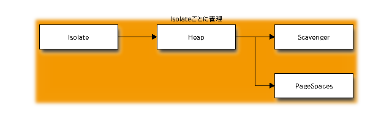

Garbage Collection Advent Calendar 2012 12/10¶
Dart VMのGarbage Collectionの紹介、その概要編です。
Dart VMは、googleが開発中のプログラミング言語Dart用のVMで、 JavaScriptとV8みたいな関係です。
Dart VMもV8と同様、C++で開発されています。
GCの概要¶
GCは、世代別GCを採用しています。
世代別GCの概要はGC本を参照しましょう。
http://www.amazon.co.jp/exec/obidos/ASIN/4798025623/nothingcosm05-22/ref=nosim
世代別GCなので、ヒープ領域をNew領域とOld領域に分けます。
- New領域は、CopyGC
- Old領域は、Mark&SweepGC
New領域(デフォルト32M)とOld領域のサイズ(デフォルト512M)は、VMの起動時のオプションで指定できます。
Heapサイズを指定するオプション
$ dart --verbose | grep heap
new_gen_heap_size: 32 (new gen heap size in MB,e.g: --new_gen_heap_size=64 allocates a 64MB new gen heap)
old_gen_heap_size: 512 (old gen heap size in MB,e.g: --old_gen_heap_size=1024 allocates a 1024MB old gen heap)
CopyGC¶
CopyGCの概要は、GC本を参照しましょう。
http://www.amazon.co.jp/exec/obidos/ASIN/4798025623/nothingcosm05-22/ref=nosim
New領域はCopyGCなので、複数に分割された領域が必要になります。
Dart VMの場合、2分割して16M、2分割した領域を相互に移動して、CopyGCを実現します。
世代別GCですので、ある条件を満たすと、New領域からOld領域にPromotionします。
Promotionの条件に、Age(年齢)は存在しません。 JVM(HotSpot)の場合、CopyGCを20回生き延びたらOld領域に移動するんだったかな？
Mark&SweepGC¶
Mark&SweepGCの概要はGC本を参照しましょう。
http://www.amazon.co.jp/exec/obidos/ASIN/4798025623/nothingcosm05-22/ref=nosim
Old領域は、PageとLargePageに分けて管理します。
Pageは、PageSize単位でAllocation(mmap)した領域で、 小さなオブジェクトはすべてPageにAllocationされます。
Sweep対象のオブジェクトがPageに配置されていた場合、 フリーな領域とした後、freelistで管理し再利用します。
LargePageは、PageSizeに収まらないような大きなオブジェクトが該当し、 適時Allocation(mmap)とSweep(munmap)を行います。
GCの構成¶
非常にシンプルですね。そうか、Mark&Sweep GCなんだねー。
| filename | line | overview |
|---|---|---|
| gc_callbacks.h | 100 | gcのprolog epilog用callback定義 |
| gc_marker.h | 50 | GCMarkerの定義 |
| gc_marker.cc | 400 | markの処理、PointerVisitor |
| gc_sweeper.h | 40 | GCSweeperの定義 |
| gc_sweeper.cc | 80 | sweepの処理 |
そう思っていた時期が。。
| filename | line | overview |
|---|---|---|
| heap.h | 200 | Heapの定義 |
| heap.cc | 350 | GCの管理とAllocation用I/Fの提供 |
| scavenger.h | 200 | Scavengerの定義 |
| scavenger.cc | 700 | CopyGCの処理と、Promotion、Allocation、PointerVisitor |
| memory_region.h | 80 | MemoryRegionの定義 |
| memory_region.cc | 20 | toとfromを2分割する |
| pages.h | 100 | PageSpaceとHeapPageの定義 |
| pages.cc | 600 | Allocation、領域確保、再利用 |
| freelist.h | 100 | FreeListとFreeListElementの定義 |
| freelist.cc | 200 | Elementの分割結合、リスト管理と解放 |
他にもGCに関連するファイルやクラスはありますが、おいおい。。
IsolateとHeap¶
Dart VMのGCの対象はHeapクラスであり、IsolateごとにHeapとGCを管理します。
そのためIsolateがSpawnされた場合、子Isolateは初期化し、新たなHeapを作成します。
IsolateごとにHeapとGCが分割されているため、GC処理中にLockや同期処理はないです。

HeapクラスがScavengerとPageSpaceを生成し、管理します。
昔はcode_space_がありましたが、old_space_に統合されました。
heapの生成箇所
Heap::Heap() {
...
new_space_ = new Scavenger(this, ...)
old_space_ = new PageSpace(this, ...)
...
}
Heap::~Heap() {
delete new_space_;
delete old_space_;
}
GCの起点¶
HeapはAllocate用のインターフェースのみ提供します。
そのため、Allocateに失敗した場合にGCが走ります。
GCの起点
Heap::CollectGarbage(Space) {
switch (space) {
case kNew:
new_space_->Scavenge();
if (new_space_->HadPromotionFailure()) { <-- Promotionに失敗した、
old_space->MarkSweep();
}
case kOld:
case kCode:
old_space_->MarkSweep();
}
}
Heap::CollectAllGarbage() {
new_space->Scavenge();
old_space->MarkSweep();
}
Allocateの起点
// Heap.h
uword Allocate(intptr_t size, Space space) { //spaceタグで、New、Oldを選べる。
ASSERT(!read_only_); //APIの種類に応じて、最初からOld領域指定もある。
switch (space) {
case kNew:
// Do not attempt to allocate very large objects in new space.
if (!PageSpace::IsPageAllocatableSize(size)) { <-- PageSize以上のものは、Old領域へ
return AllocateOld(size, HeapPage::kData);
}
return AllocateNew(size);
case kOld:
return AllocateOld(size, HeapPage::kData);
case kCode:
return AllocateOld(size, HeapPage::kExecutable); <-- Codeは、Old領域へ確保
default:
UNREACHABLE();
}
return 0;
}
Heap::AllocateNew(size) {
uward addr = new_space_->TryAllocate(size);
if (addr != 0) {
return addr;
}
CollectGarbage(kNew) <-- NewのAllocateに失敗したらGC
addr = new_space_->TryAllocate(size);
if (addr != 0) {
return addr;
}
return AllocateOld(size, HeapPage::kData); <-- 再度失敗したらOld領域に確保
}
Heap::AllocateOld(size, type) {
uword addr = old_space_->TryAllocate(size, type);
if (addr == 0) {
CollectAllGarbage(); <-- 失敗したらGC
addr = old_space_->TryAllocate(size, type, kForceGrowth);
if (addr == 0) {
OS::PrintErr(Exhausted heap space, ...
}
}
return addr;
}
メンテナ¶
new領域管理のScavengerは、initial checkinからありました。
その後rev2000頃、世代別gcのOld領域管理(gc_marker gc_sweeper)を追加。
主なメンテナは下記の2名です。
- cshapiro@google.com
- iposva@google.com V8の開発もされていた方ですね。
まとめ¶
- Dart VMのGCは世代別GC
- New領域は、CopyGC(Scavenger)で掃除する。
- Old領域は、Mark&SweepGCで掃除する。
- GC本は偉大だった。
- 詳細編があるとよいですね。。